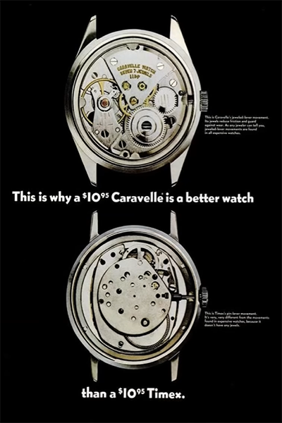
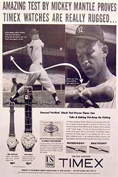

Timex Marlin
Timex is a prestigious watch manufacturer that began production in the mid-20th century. Timex has produced multiple models that were sold under their brand, but in this page, we’ll take a look at one of their most iconic designs, the Timex Marlin.

Timex back then was known to produce watches easily available for the masses. Their product covered a wide range of people from farmers, construction workers, to office workers. Timex was very successful in their earlier days when there was not much competition in the market for readily available watches. What made the designs of Timex watches stand out, especially the Timex Marlin, is that they looked like expensive watches but were sold at an incredibly low price. Timex covered a market that provided class to people that were not willing to pay lavishly for it. With the design of the Timex Marlin, the watch appealed to many people becoming an iconic timepiece which was re-released in the year 2017, over 57 years since its release in 1960.
Looking nice wasn’t the only selling point of the Timex Marlin, Timex watches were known to be extremely durable. Even if somebody found a way to break their Timex watch, it wouldn’t be a big deal as the watch is so cheap and easily replaceable. Although due to these same characteristics, Timex watches weren’t serviced very much by watch makers. Back in the day, watch makers would refuse to repair Timex watches, yes, they were able to refuse requests, because Timex watches were not worth repairing which highlights some of the downsides of the watch.

To be easily available and cheap, the Timex Marlin had a cheap mechanical movement which was powered by winding the crown of the watch. When the watch was wound, a spring, which absorbs the energy and releases it to several gears, makes the mechanisms of the watch move, making the watch tik. Since the mechanical movement was so cheaply made, the mechanical movement did not look aesthetically pleasing, this characteristic was used by Timex's competitors against them. Timex's competitors would show the ugly movement of Timex watches to persuade the public into not buying their watches. Another downside to the cheap mechanical movement is Timex watches were not very accurate at telling the time. Timex watches would lose or gain extra seconds due to the low-quality movement, making the watch not very accurate at time telling.

Even with these downsides, Timex watches were still very successful due to Timex’s genius marketing. In
Television advertisements, Timex would place their watches under rigorous testing like being
shot by an arrow,
placed in a boat motor,
submerged into water by a dolphin, and
dived off a cliff to the sea.
In newspapers, Timex would hire famous athletes or musicians to endorse their product showing the durability
and class of their product. These insane and interesting advertisements gave the durable essence of Timex watches
and their insane value to be able to hold up against rigorous activities. People then knew that Timex watches may
not be classy but they were tough as nails. Timex put out their iconic slogan “Can take a lickin’ and keep on
tickin’” proving the value and uniqueness of their brand, and targeting their proper market audience.